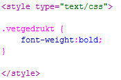
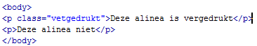
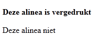
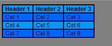
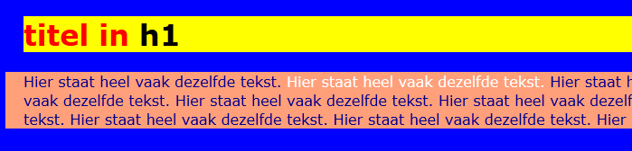
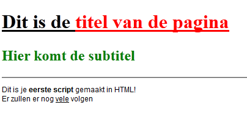
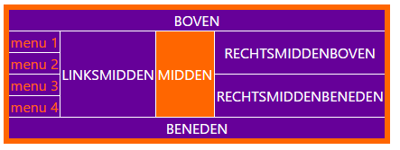

Class
Zoals we inmiddels weten kan je alle HTML elementen noemen en dus opmaken in CSS. Daarnaast is het ook mogelijk om zelf een Class aan te maken. Deze Class kan je dan koppelen aan elk willekeurig HTML element. Dit element krijgt dan de opmaak opgegeven zoals in de CSS.
Je moet er twee dingen voor doen. Eén is de Class aanmaken in je CSS. Dit doe je door een punt (.) voor de naam te zetten en daarna een zelf gekozen naam. Hieronder zie je een voorbeeld.
| Voorbeeld 1 |
|  |
Hier is dus de Class vetgedrukt aangemaakt. Je weet dat dit een Class is door de punt voor de naam. Je kunt Classes en gewone CSS door elkaar gebruiken.
De Class doet nu nog niets. Dit komt omdat de Class nog wel moet worden gekoppeld aan een HTML element. Het voordeel van een Class is dat we dus zelf kunnen bepalen waar we deze aan koppelen. Hieronder zie je een voorbeeld hoe dat moet.
| Voorbeeld 2 |
|  |
Je hebt dus een HTML element, in dit geval de <p>. Daarachter typ je class=””. Tussen de dubbele quote type je de naam die je bedacht hebt voor je class. Je laat dan dus de punt weg.
| Opdracht 1: Namaken | |
|
Open een nieuw HTML bestand.
Sla het bestand op als Opdracht15-1.html. |  |
Waar een Class ook prima voor gebruikt kan worden is het verduidelijken van tabellen. Als je namelijk hele grote en lange tabellen hebt, is het makkelijk om alle “even”-rijen een andere kleur te geven dan de “oneven”-rijen. Dit kon voorheen niet omdat alle rijen met <tr> beginnen en je dus geen onderscheidt tussen even en oneven kan maken.
| Opdracht 2: Tabel | |
|
Open het bestand opdracht13-1.html en Opmaak13-1.css
Sla de bestanden op als opdracht15-2.html en opmaak15-2.css |  |
Nu weten we dus hoe we een Class kunnen maken en dat we hierdoor zelf kunnen bepalen welk onderdeel we deze opmaak geven. Alleen wat nou als je bijvoorbeeld één woord of een deel van een zin wilt opmaken? We kunnen namelijk deze Class alleen maar aan een HTML element koppelen. Om dit voor elkaar te krijgen is het HTML element <span> bedacht. <span> is een HTML element zonder standaard opmaak.
| Opdracht 3: Tekst |
|
Open het bestand opdracht12-2.html.
Sla de bestanden op als opdracht15-3.html. |
|  |
| Opdracht 4: Tekst |
|
Open het bestand opdracht11-1.html.
Sla de bestanden op als opdracht15-4.html. |
|  |
| Opdracht 5: Tabel | |
|
Open het bestand opdracht7-3.html. Gebruik classes (waar dat nodig is) om deze tabel na te maken.
Sla de bestanden op als opdracht15-5.html. |  |